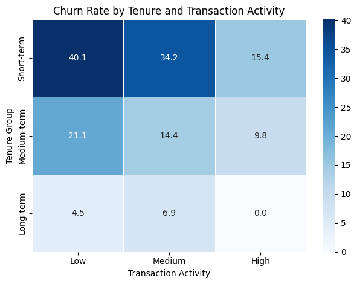
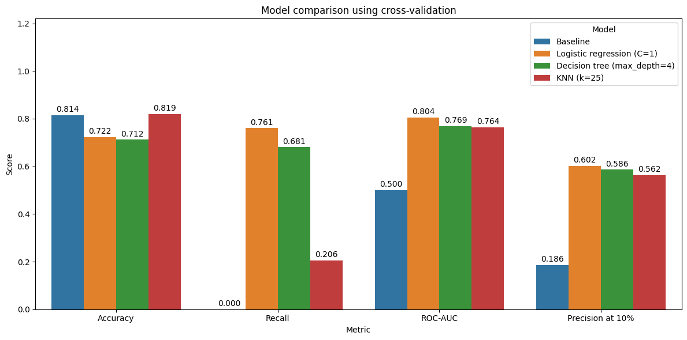

Python · scikit-learn · Group E, DSB102
Who should Sydney Bank call first?
Rank 1,600 customers so a retention team spends 160 calls on people who already look like those who left. I led Group E. My part was the exploratory analysis and the written report. Thineesha Bhanura Karunanayake and Huzaifah Qureshi led the modelling, and Phat Nguyen shared the exploratory work.

-
Frame
The bank can contact about 10% of the book, 160 people. The decision is who those people are. Predicting that everyone stays is right about 81% of the time and produces an empty call list, so accuracy is the wrong score.
-
Audit
One row is one customer. Gender labels arrived as mixed strings and were standardised to Female and Male. There were no missing values and no duplicate customer ids. CustomerID stays off the model. The target is people who have already left: 297 of 1,600, a base rate of 18.6%. There is no outcome date, so the score says who resembles past leavers.
-
Baseline
The baseline predicts that every customer stays. It has no ranking, so a random top 10% has precision 18.6% and ROC-AUC 0.50. Logistic regression (C = 1), a decision tree (max depth 4), and KNN (k = 25) were tuned on precision at 10% with stratified 5-fold cross-validation, then the winner was checked on 320 held-out customers.
-
Claim
Logistic regression is the list to use. On the held-out customers, 19 of the 32 highest-risk names had left: precision at 10% of 59%, a 3.2× lift on a test churn rate of 18%, and ROC-AUC 0.78 against the baseline’s 0.50. In cross-validation it also beat the tree (precision at 10% 0.59, AUC 0.77) and KNN (0.56, AUC 0.76). KNN’s accuracy was the highest of the four because it mostly predicted that people stay.
-
Recommendation
Call newer, inactive customers first. The 160-person list averages 19 months of tenure and is 99% inactive. At the test hit rate that list should reach about 95 churners, against about 30 from a random list of the same length. A pilot where the model list keeps no more customers than a random list would overturn the recommendation.
